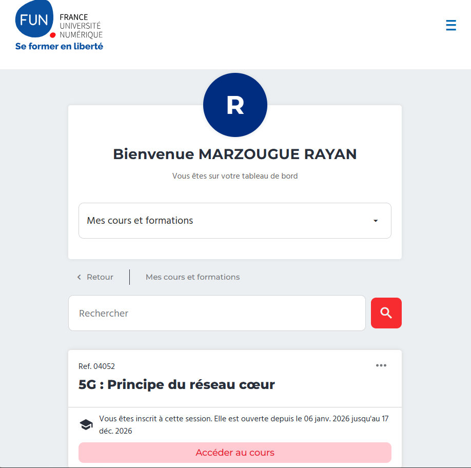
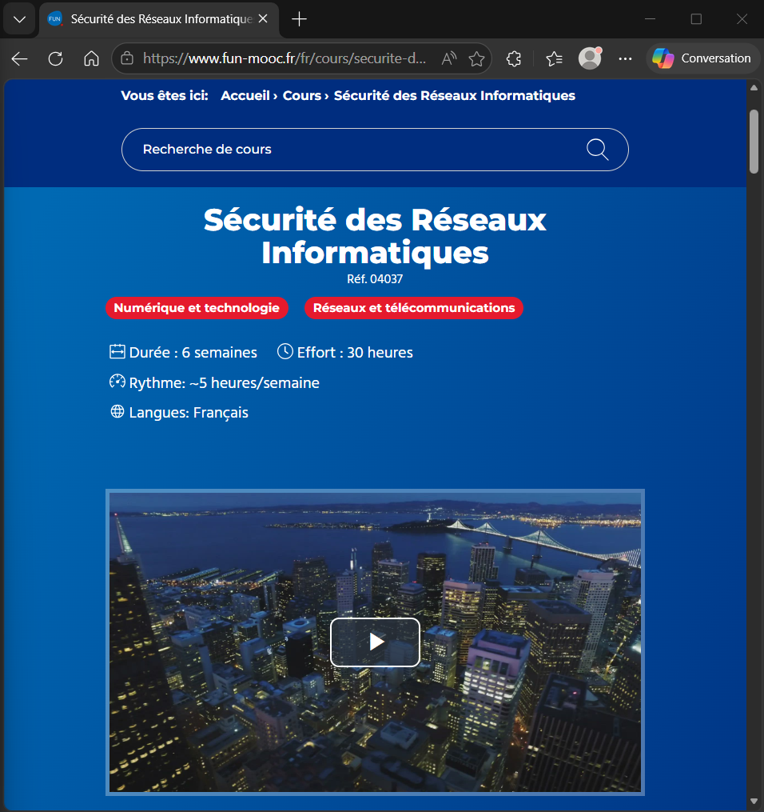

1. Contexte et objectif
L’objectif de cette SAÉ était de découvrir les principes fondamentaux de la cybersécurité, d’identifier les principales menaces numériques et d’adopter une posture plus responsable face à l’usage des outils informatiques.
2. Mon rôle dans la SAÉ
Mon rôle a été d’assimiler les contenus de formation, d’identifier les risques majeurs et de les reformuler de manière compréhensible. J’ai aussi travaillé sur la restitution des bonnes pratiques de sécurité à travers un support clair et structuré.
3. Compétences et apprentissages critiques mobilisés
- AC11.02 : comprendre les fondements des systèmes numériques et des communications ;
- AC11.04 : comprendre les rôles et principes des systèmes d’exploitation ;
- AC11.06 : appliquer une démarche de sécurisation du poste de travail.
Cette SAÉ contribue surtout à la compétence Administrer, car elle permet de comprendre les bases nécessaires avant toute action d’administration ou de sécurisation.
4. Tâches réalisées
- Étude des recommandations de cybersécurité et des bonnes pratiques ;
- Analyse de risques courants : phishing, mots de passe faibles, logiciels malveillants, mauvaises habitudes utilisateurs ;
- Préparation d’un support de restitution ;
- Réflexion sur les mesures concrètes à appliquer sur un poste de travail.
5. Traces du projet

Création du compte et assignation des cours au FUN-MOOC

Cours du Projet en question.
6. Analyse de ma progression
Cette SAÉ a changé ma manière de voir l’informatique. Avant, je considérais surtout les outils selon leur usage. Après cette expérience, j’ai commencé à les regarder sous l’angle du risque, de la protection et des conséquences possibles d’un mauvais comportement utilisateur.
7. Difficultés rencontrées
La difficulté principale a été de passer d’une compréhension personnelle des notions à une capacité de les expliquer clairement. Certains concepts étaient simples à comprendre techniquement mais plus compliqués à vulgariser.
8. Ce que j’ai mis en place pour les surmonter
J’ai essayé de reformuler les notions avec mes propres mots et de m’appuyer sur des exemples concrets de la vie quotidienne. Cette méthode m’a aidé à mieux mémoriser les concepts et à les rendre plus compréhensibles.
9. Autoévaluation
Je pense avoir acquis une bonne base de culture générale en cybersécurité. Cette SAÉ m’a donné des réflexes utiles, notamment sur la gestion des mots de passe, les mises à jour, les sauvegardes et l’attention portée aux tentatives de fraude. Je dois encore progresser dans la vulgarisation de certains sujets techniques.
10. Réinvestissement possible
Ces acquis sont directement réutilisables dans toute activité informatique. Ils constituent un socle utile pour l’administration, l’assistance utilisateur et, plus largement, pour la cybersécurité.